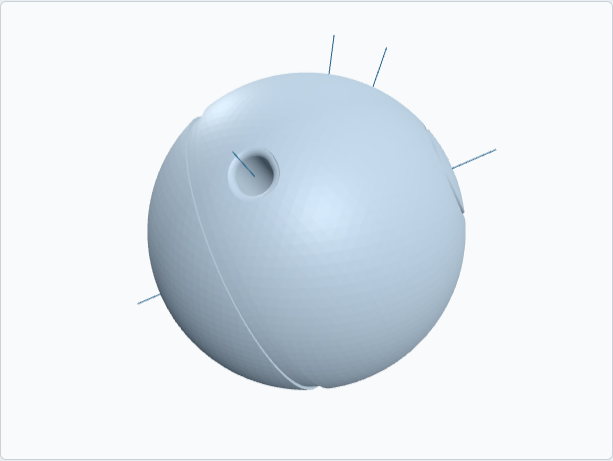
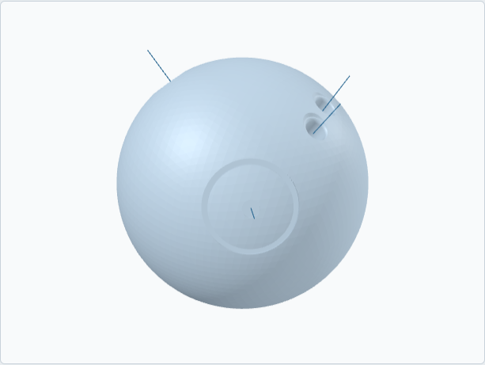
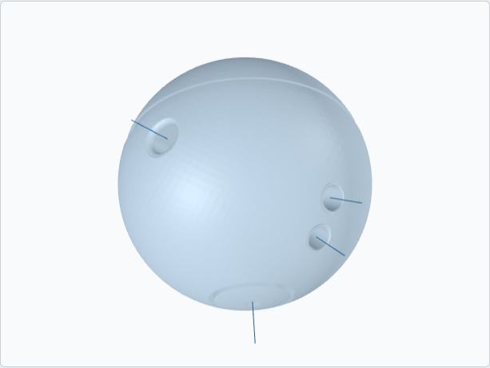

Rev Ball
$129 plus shipping. Made to order, one ball a day.
Order on Etsy Order on TikTok Shop Build it first, free

I print the Rev Ball from your pro shop's drill sheet: thumb, middle and ring hole sizes in 1/64-inch steps, both spans, forward or reverse and lateral pitch on every hole, right or left hand. Two-handed? Leave the thumb hole off. It's 200 mm across and about 700 g in PETG, so it's a bit smaller and a lot lighter than your ball, and you roll it on carpet from a kneeling swing. It either rolls and curves off the line or it doesn't, and the card in the box tells you what each result says about your hand.
What's on it
- Your sheet, as written. Hole sizes in 1/64-inch steps, both spans, every pitch, and the oval thumb if your sheet has one. The thumb hole is blind, 70 mm deep, or set from your thumb length if you give it to me.
- Two bullseyes at your axis point. A dot inside a ring, in the second color, at the PAP from your sheet. When the ball spins about that axis they hold still. If your shop never measured a PAP, I put them at the common spot.
- The track ring. The line the ball rolls on about that axis with your axis tilt, the same line as the oil ring on your own ball. The fit sheet in the box says how far it sits from each hole, so you can hold your ball next to it and check.
- A small flat on the bottom so it stays put on a shelf, and your order number in the base.
- Smoothed bores. I sand them by hand before it ships. Finish the fit with the tape in the box, same as your ball.


What you need to order
Your drill sheet. The shop that drilled your ball keeps it on file, and a photo of it is fine. Specifically: right or left hand; thumb, middle and ring hole sizes; both spans; forward or reverse and lateral pitch on each hole; through thumb or none. Optional, if your shop measured them: your PAP (over, then up), your axis tilt, and your thumb length to the first joint. Then your two colors.
Paste it into the personalization box at checkout using the template there, or build the ball first and paste the exported fit sheet instead. Fractions are fine. That's how shops write them anyway.
In the box
- The ball in your two colors, bullseyes and track ring fitted
- A printed fit sheet matching your order
- The training card: the two drills, the readings, the oval scale
- A roll of bowler's tape
Lead time and the guarantee
Made to order. One ball takes a printer day, so allow 5 to 10 business days before it ships, then 2 to 5 days in the post. Your sheet is stored with the order. If the ball doesn't match it, or doesn't roll true, I reprint it free within 30 days. The full terms.
Use and safety
Rolled on carpet, never thrown. Keep a couple of meters clear in front of the line. It is not a bowling ball. Keep it out of a hot car: PETG softens with heat, and a warped ball won't roll true. Not for children under 12 without supervision.